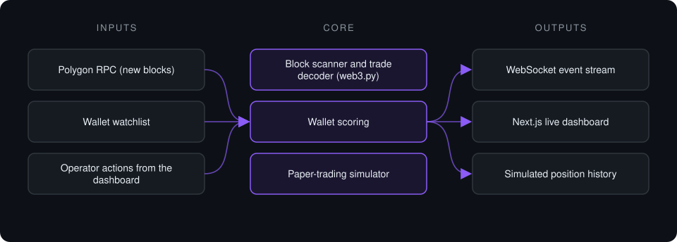

Case study · Private project
Prediction Market Monitor
Real-time on-chain monitoring system for prediction-market activity on Polygon, with a paper-trading simulator and a live WebSocket dashboard.
This is a proprietary project. Source code is private. This page describes the system's architecture and capabilities only.
Status: Paper trading only. The system places no orders.
Problem it solves
Prediction-market activity settles on-chain, but raw blocks are unreadable for a person watching in real time. This system reads new Polygon blocks, decodes exchange trades from a configured watchlist of wallets, scores each wallet's track record, and streams everything to a dashboard where trades can be followed or skipped in a paper-trading simulator.
Architecture

- The ingestion loop polls new Polygon blocks and decodes trades sent to the prediction-market exchange contracts.
- Trades from watched wallets are normalized and each wallet's score is updated.
- Events are pushed to every connected dashboard over a WebSocket.
- The operator follows or skips each trade; the simulator records the outcome without touching real funds.
- If the RPC is unreachable, the service switches to a mock feed so the dashboard keeps working.
Key features
- On-chain trade decoding from raw blocks and receipts
- Per-wallet scoring updated on every event
- Paper-trading simulator, no live orders
- WebSocket push to any number of dashboards
- Automatic fallback feed when the RPC is down
- Kanban-style dashboard with per-trade detail
Tech stack
- Python
- FastAPI
- web3.py
- WebSockets
- Next.js
- TypeScript
- Tailwind CSS
What it does in practice
- Turns raw on-chain activity into a readable, real-time event feed.
- Lets ideas be tested in simulation before any capital is involved.
Not financial advice. Proprietary project, source code private.